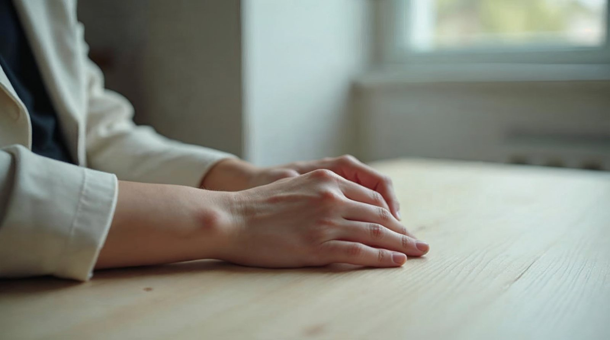
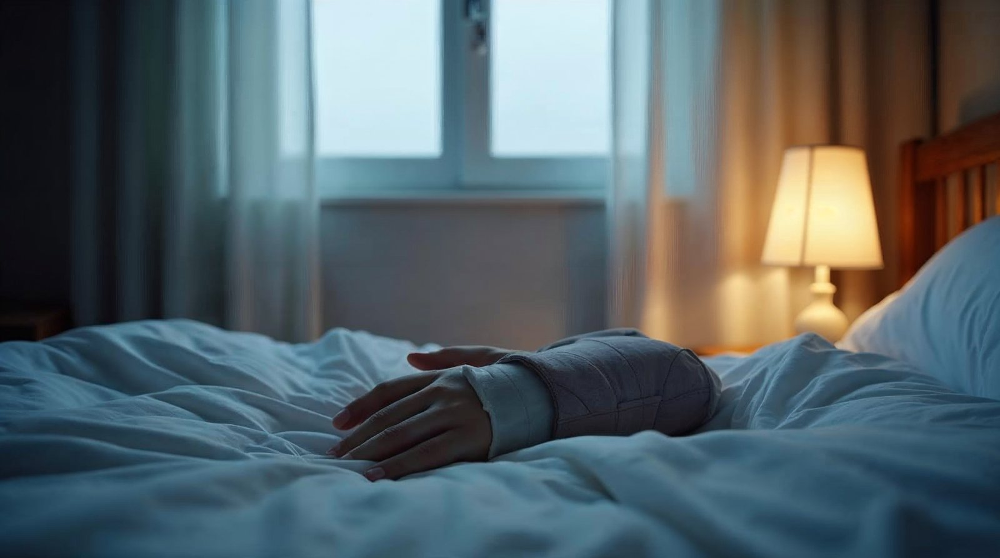
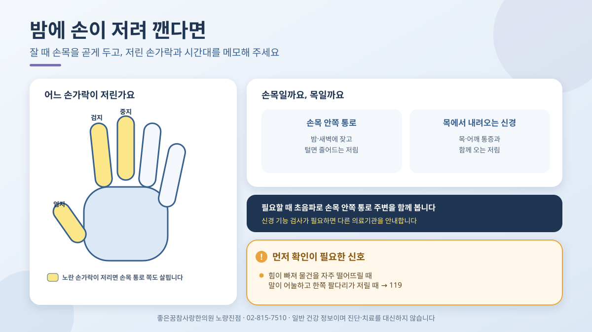

이종호 한의사 감수좋은꿈참사랑한의원 대표원장 (한의사 면허번호 19769)발행 2026-11-23 · 수정 2026-11-25
이 글의 차례
밤에 손이 저려 깰 때 손목 초음파로는 손목 안쪽 신경이 지나는 좁은 통로 주변을 살펴볼 수 있습니다. 다만 손 저림은 손목에서 오기도, 목에서 오기도 해서 어느 손가락이 언제 저린지를 먼저 자세히 여쭙니다. 새벽에 손이 저려 털어야 다시 잠이 든다는 이야기를 진료실에서 자주 듣습니다.
손목에서 오는 저림은 엄지·검지·중지 쪽에 몰리고, 밤이나 새벽, 운전이나 휴대폰처럼 손목을 굽힌 채 있을 때 심해지는 경우가 많습니다. 반대로 새끼손가락 쪽이 저리거나 고개를 움직일 때 팔로 뻗치는 저림이라면 다른 곳을 먼저 살펴야 할 수 있어, 초음파를 보기 전에 어디가 언제 저린지 저림의 지도부터 함께 그려 봅니다.
왜 이런 불편이 생길 수 있나요
- 손목 안쪽에는 신경과 힘줄이 함께 지나는 좁은 통로가 있어, 이곳 압력이 높아지면 엄지·검지·중지 쪽이 저릴 수 있습니다.
- 잘 때 손목을 굽힌 채 오래 있으면 통로 안 압력이 높아져 밤과 새벽에 저림이 잦아질 수 있습니다.
- 손목을 굽힌 채 반복하는 작업, 휴대폰을 오래 쥐는 습관도 부담이 됩니다.
- 목에서 팔로 내려가는 신경이 눌려도 손이 저릴 수 있고, 임신이나 일부 질환에서 함께 나타나기도 해 구분이 필요합니다.
- 새끼손가락과 약지 바깥쪽이 저리면 손목보다 팔꿈치 안쪽을 지나는 다른 신경을 먼저 살피는 경우가 많습니다.
- 손이 차고 시린 것과 신경이 눌려 저린 것은 느낌이 달라, 어떤 느낌인지 말로 구분해 여쭙습니다.
먼저 이렇게 여쭙니다
- 엄지, 검지, 중지 중 어느 손가락이 저린가요?
- 저림이 주로 밤이나 새벽에 오나요?
- 손을 털면 저림이 줄어드나요?
- 목이나 어깨 통증이 함께 있나요?
- 당뇨나 갑상선 질환, 임신 중인 것이 있나요?
일상에서 먼저 해 볼 수 있는 것
- 잘 때 손목을 꺾고 자지 않기(손목을 곧게 두기)
- 손목을 오래 굽히는 작업 중간에 쉬기
- 휴대폰을 오래 쥐고 있지 않기
- 낮에는 손목 받침을 쓰고, 키보드와 마우스를 팔꿈치 높이에 맞추기
- 저린 손가락과 시간대를 메모하기
상황별 예시
- 예를 들어 하루 종일 키보드와 마우스를 쓰는 직장인이 새벽마다 엄지·검지가 저려 손을 털고 다시 잠드는 경우라면, 잘 때 손목을 곧게 두고 낮에는 손목 받침을 쓰며, 깬 횟수와 저린 손가락을 2주 동안 적어 봅니다.
- 예를 들어 출산 뒤 아기를 안고 수유하며 밤마다 손이 저린 경우에는 손목을 꺾어 받치는 자세와 몸의 붓기를 함께 살핍니다. 수유 중이라는 점은 진료 전에 먼저 알려 주세요.
- 예를 들어 손빨래와 걸레질을 오래 해 온 어르신이 양손이 다 저리다면, 손목만 보지 않고 당뇨나 갑상선 질환이 있는지 먼저 여쭙고, 필요하면 원내 당화혈색소 검사기로 혈당 흐름을 확인하거나 내과 검사를 안내합니다.

스스로 점검해 보세요
- 저림이 주로 엄지·검지·중지 쪽에 있다.
- 새벽에 손이 저려 깨고, 손을 털거나 주무르면 나아진다.
- 운전, 휴대폰 보기, 책 들기처럼 손목을 굽힌 채 있을 때 저림이 온다.
- 단추 잠그기나 동전 집기처럼 작은 동작이 예전보다 서툴다.
- 고개를 돌리거나 젖힐 때 팔로 저림이 뻗친다.
- 저림이 양손에 다 있다.
- 임신 중이거나 당뇨·갑상선 질환이 있다.
한의원에서 함께 살필 수 있는 경우
- 손 저림이 이어지는 경우 필요하다고 판단되면 초음파로 손목 안쪽을 확인합니다.
- 목과 어깨의 긴장이 함께 관련된 경우 함께 살핍니다.
- 신경 검사가 더 필요하다고 판단되면 다른 의료기관을 안내합니다.

첫 방문은 이렇게 진행됩니다
- 이야기 듣기: 저린 손가락과 한쪽인지 양쪽인지, 저린 시간대와 깬 횟수, 손 쓰는 일, 앓고 있는 질환과 약을 먼저 충분히 듣습니다.
- 맥 짚기와 혀·배 살피기: 모든 분께 맥부터 짚어 잠과 붓기, 손발의 온기까지 몸 전체 상태를 살피고, 필요하면 혀와 배도 봅니다. 밤에 자주 깨는 분은 잠의 질도 함께 여쭙습니다.
- 목에서 손끝까지 확인: 목과 어깨 움직임, 팔꿈치와 손목, 손가락 감각과 힘을 차례로 보고, 필요하다고 판단될 때 초음파로 손목 안쪽 통로 주변의 신경 모양과 힘줄을 화면으로 보여 드리며 설명합니다.
- 방향 정하기: 침, 약침, 목·어깨 긴장을 살피는 추나 가운데 상태에 맞는 방법을 정합니다. 초음파는 신경의 모양을 보는 도구로 신경 기능 검사를 대신하지 않아, 그 검사가 필요하면 다른 의료기관을 안내합니다.
- 귀가 전과 다음 방문: 잘 때 손목 자세를 함께 정리해 드리고, 다시 오시면 그사이 깬 횟수와 저린 손가락 변화를 이어서 여쭙습니다.
얼마나 지켜보고 언제 상담할까요
- 잘 때 손목을 곧게 두고 낮에 손목을 굽히는 작업 중간에 쉬는 습관을 2주 정도 이어 가며, 밤에 깬 횟수와 저린 손가락을 적어 봅니다.
- 2~3주가 지나도 일주일에 여러 번 저려서 깨거나, 낮에도 저림이 이어지면 상담을 받아 보세요.
- 단추 잠그기처럼 작은 동작이 서툴러지기 시작했다면 기다리지 말고 확인합니다. 신경이 오래 눌리면 감각뿐 아니라 힘이 빠지는 쪽으로 이어질 수 있어서입니다.
- 아래 증상이 있으면 지켜보지 말고 먼저 확인합니다.
이렇게 기록해 오시면 상담이 쉬워집니다
- 저린 손가락(엄지·검지·중지·약지·새끼)과 한쪽인지 양쪽인지
- 저림이 오는 시간대와 깬 횟수
- 손목을 많이 쓰는 일의 종류와 시간
- 앓고 있는 질환과 복용 중인 약
이런 증상은 먼저 확인이 필요합니다
- 손에 힘이 빠져 물건을 자주 떨어뜨리는 경우
- 엄지 쪽 손바닥 근육이 눈에 띄게 줄어든 경우
- 저림이 양손과 양발로 함께 번지거나 걸음이 불안정해지는 경우
- 한쪽 팔다리가 갑자기 저리거나 힘이 빠지는 경우, 말이 어눌해지거나 얼굴 한쪽이 처지는 경우
얼굴 한쪽이 처지거나, 말이 어눌해지거나, 한쪽 팔다리가 갑자기 저리거나 힘이 빠지면 하나만 있어도 한의원 진료를 기다리지 말고 가까운 응급실로 가세요.
저림이 양손과 양발로 번지며 걸음이 불안정해지거나, 손 힘이 빠지고 엄지 쪽 근육이 줄어든다면 미루지 말고 신경 검사가 가능한 의료기관에서 먼저 확인받으세요. 며칠 사이 빠르게 심해진다면 가까운 응급실로 가세요.
초음파는 진찰 중 필요하다고 판단될 때 확인하는 방법이며, 뼈 속이나 깊은 부위처럼 초음파로 보기 어려운 곳은 다른 의료기관 검사를 안내해 드릴 수 있습니다. 약침을 검토할 때는 약물·음식 알레르기, 혈액을 묽게 하는 약, 당뇨·간·신장 질환, 임신 가능성을 먼저 알려 주세요. 복용 중인 약은 처방한 의사와 상의 없이 줄이거나 끊지 않습니다.
관련 글
- 목에서 팔로 저림이 내려올 때(목디스크 의심)는 어떤 점을 먼저 확인하나요?
- 손발이 저린 것과 시린 것은 어떻게 다르게 설명하면 될까요?
- 엄지 쪽 손목이 아파 휴대폰 쥐기도 불편할 때는 어떻게 살피나요?

여쭙는 것
- 엄지, 검지, 중지 중 어느 손가락이 저린가요?
- 저림이 주로 밤이나 새벽에 오나요?
- 손을 털면 저림이 줄어드나요?
생활에서 해 볼 것
- 잘 때 손목을 꺾고 자지 않기(손목을 곧게 두기)
- 손목을 오래 굽히는 작업 중간에 쉬기
- 휴대폰을 오래 쥐고 있지 않기
한의원에서 함께 살필 것
- 손 저림이 이어지는 경우 필요하다고 판단되면 초음파로 손목 안쪽을 확인합니다.
- 목과 어깨의 긴장이 함께 관련된 경우 함께 살핍니다.
- 신경 검사가 더 필요하다고 판단되면 다른 의료기관을 안내합니다.
먼저 확인이 필요한 신호
- 손에 힘이 빠져 물건을 자주 떨어뜨리는 경우
- 엄지 쪽 손바닥 근육이 눈에 띄게 줄어든 경우
- 저림이 양손과 양발로 함께 번지거나 걸음이 불안정해지는 경우
한눈에 보는 표
| 구분 | 핵심 |
|---|---|
| 여쭙는 것 | 엄지, 검지, 중지 중 어느 손가락이 저린가요? 저림이 주로 밤이나 새벽에 오나요? |
| 생활에서 해 볼 것 | 잘 때 손목을 꺾고 자지 않기(손목을 곧게 두기) 손목을 오래 굽히는 작업 중간에 쉬기 |
| 한의원에서 함께 살필 것 | 손 저림이 이어지는 경우 필요하다고 판단되면 초음파로 손목 안쪽을 확인합니다. 목과 어깨의 긴장이 함께 관련된 경우 함께 살핍니다. |
| 먼저 확인이 필요한 신호 | 손에 힘이 빠져 물건을 자주 떨어뜨리는 경우 엄지 쪽 손바닥 근육이 눈에 띄게 줄어든 경우 |
자주 묻는 질문
초음파로 신경도 볼 수 있나요?
손목 부위 신경의 모양을 어느 정도 볼 수 있지만, 신경 기능은 별도 검사가 필요할 수 있습니다.
양손이 다 저리면요?
양쪽 모두 저리면 다른 원인도 함께 살펴야 해서 증상을 더 자세히 여쭙니다.
손목 보호대를 하고 자면 도움이 되나요?
밤에 손목이 꺾이지 않게 하는 데 도움이 될 수 있습니다. 어떤 형태가 맞는지는 진료 때 함께 이야기합니다.
새끼손가락 쪽이 저린 것도 손목 문제인가요?
새끼손가락과 약지 바깥쪽이 저리면 팔꿈치 안쪽을 지나는 다른 신경이 관련된 경우가 많습니다. 통화나 팔베개처럼 팔꿈치를 오래 굽히고 있는 습관을 함께 여쭙습니다.
손목 초음파를 볼 때 준비할 것이 있나요?
손목 안쪽에 젤을 바르고 탐촉자를 대어 보는 방법이라 따로 준비할 것은 없습니다. 소매를 걷어 올리기 편한 옷을 입고 오시면 편합니다.
진료 시간은 어떻게 되나요?
좋은꿈참사랑한의원은 평일 09:30~20:00(점심 13:00~14:00), 토·일·공휴일 09:30~15:00에 진료합니다.
좋은꿈참사랑한의원은 재진 때 지난번 이야기부터 이어서 여쭙니다. 진료시간과 예약은 오시는 길에서 확인하세요.
어디서 상담받을 수 있나요?
좋은꿈참사랑한의원은 서울 동작구 만양로2길 2 신성빌딩 3층·5층(서울 동작구 상도동, 7호선 상도역 3번 출구 근처)에 있습니다. 한의사 3명(이종호 대표원장, 조영기 수석진료원장, 정원영 진료원장)이 진료합니다. 진료시간은 평일 09:30~20:00(점심 13:00~14:00), 토·일·공휴일 09:30~15:00이며, 방문 전 전화로 확인을 권합니다. 예약은 네이버 예약, 카카오톡 상담, 전화 02-815-7510로 받습니다.
이 글은 일반적인 건강 정보이며 개인의 진단이나 치료를 대신하지 않습니다. 증상이 있거나 복용 중인 약이 있다면 진료를 통해 확인하세요. 치료 효과는 개인마다 다를 수 있습니다.
작성 기준: 일반적으로 알려져 있는 건강 정보를 참고해 정리했습니다(대표원장 감수). 증상 기록은 1~2주 동안 하루 1회, 비슷한 시간에 적어 오시면 지난 상태와 비교하기 쉽습니다.